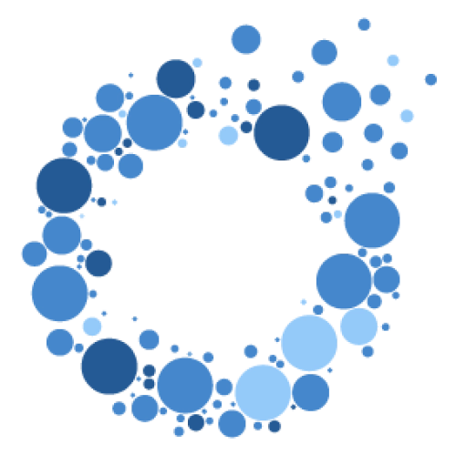

3D Bio
Implanting 3D printed living tissues in patients.
3DBio is a clinical-stage biotechnology company and leader in regenerative medicine using novel 3D-bioprinting and materials technologies to deliver safe, functional and personalized living tissues and organs, engineered on-demand for patients. 3DBio’s pioneering approach develops living tissue implants with structural and functional integrity with a four-part technology platform, including: novel and proprietary 3D-bioprinter (GMPrint™), bio-ink (ColVivo™), specialized cell culture system, and implantable protective shell (Overshell Technology). Today, 3DBio is breaking new ground with a clinical trial underway to treat Microtia, three additional programs nearing the clinic, and multiple life-changing treatment approaches in development. 3DBio is committed to providing healthcare professionals with safe and functional implant solutions delivering optimal patient outcomes.
- Founder
Dan Cohen - Website
3dbiocorp.com - X
@3dbiocorp - Location
New York, NY